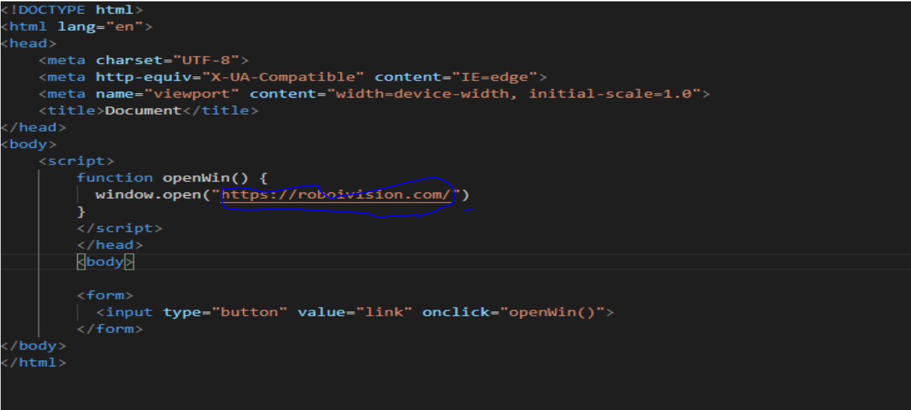

CODEDIV
wich software we use
ans: visual code
can you login for html
to weclome to CODEDIV can you larn html css this is a complet corse for html and css
i can tell you in 1 web this corse is in full video
this video for img tag
The img tag is used to embed an image in an HTML page. Images are not technically inserted into a web page; images are linked to web pages. The img tag creates a holding space for the referenced image. ... alt - Specifies an alternate text for the image, if the image for some reason cannot be displayed
This is a video tag
video tag help you
The video> tag is used to embed video content in a document, such as a movie clip or other video streams. The video> video tag contains one or more source> tags with different video sources. The browser will choose the first source it supports.
write this code in vs code this is button code you can see in vs code download link im mark in blue that is past your link
